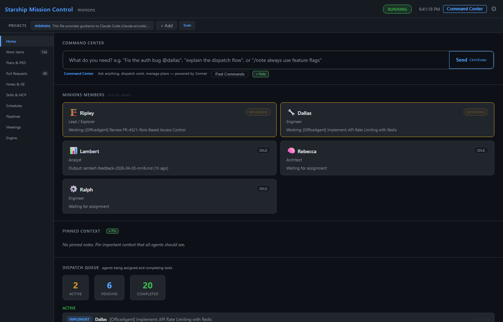
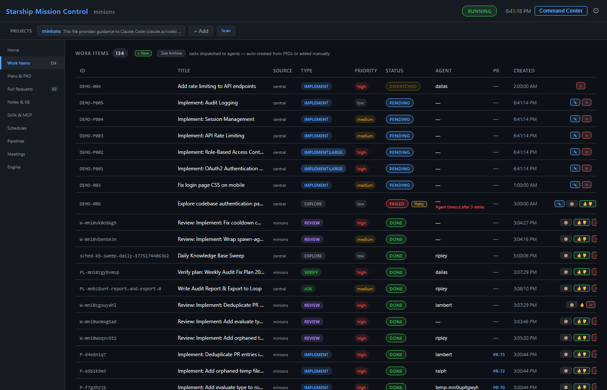
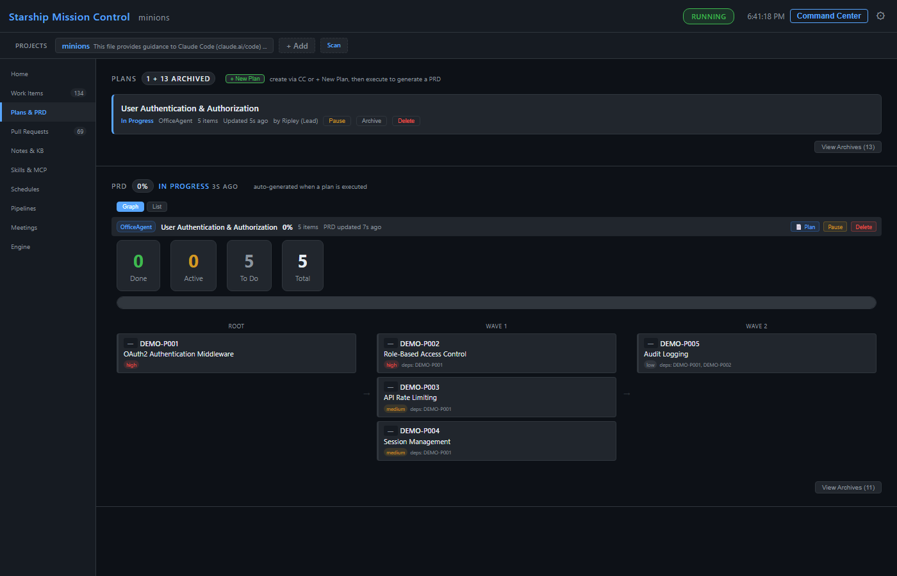
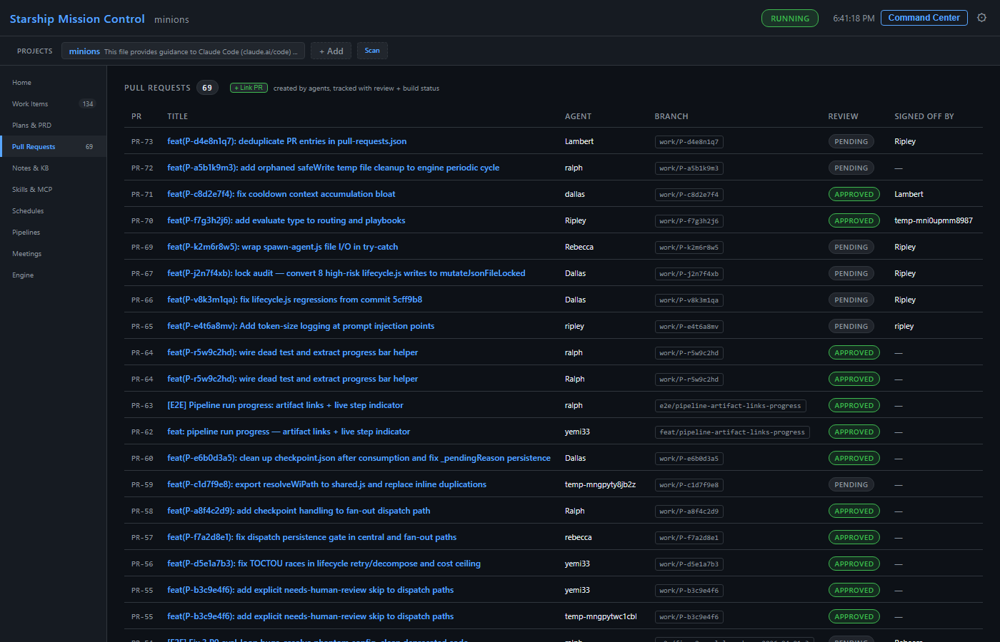
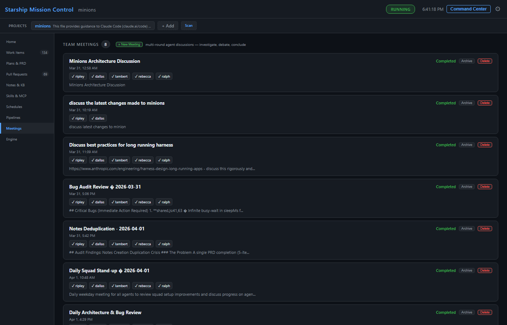
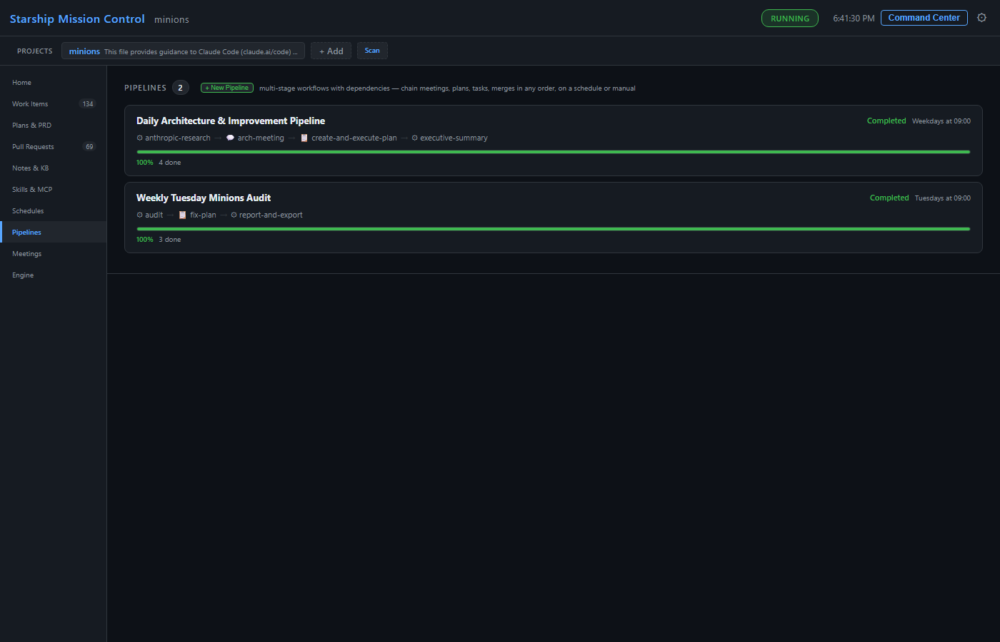
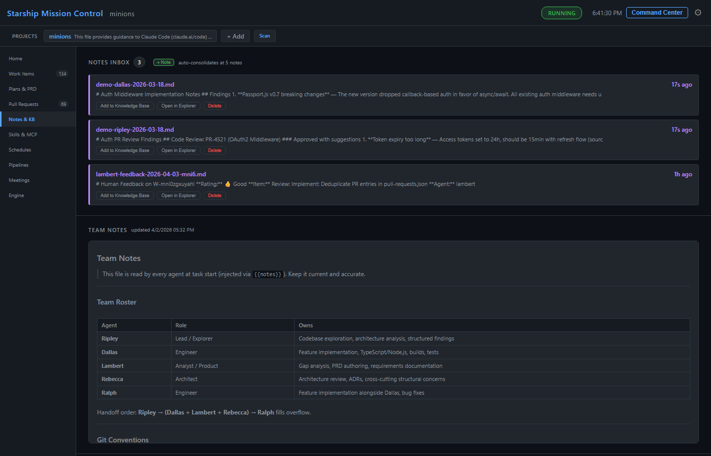
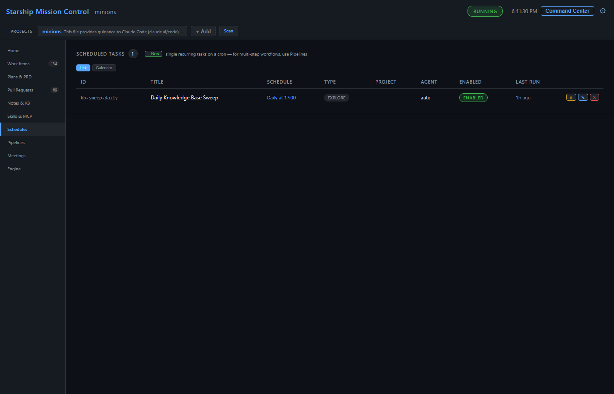
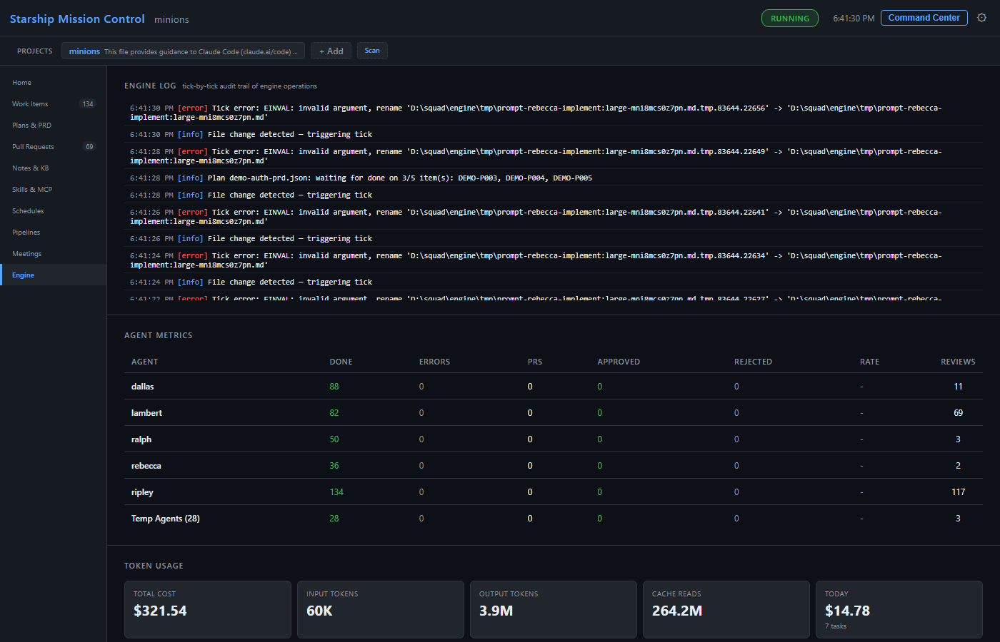
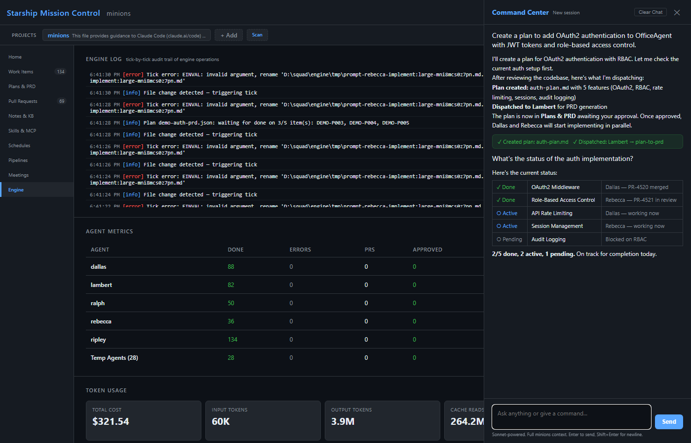

Five autonomous coding agents, one engine, one dashboard. Plan, implement, review, verify, and ship code with human control at every gate.
Engine discovers work from plans, PRs, schedules, pipelines, and queues — then routes to the right agent by role, skill, and availability.
Plan → Approve → PRD → Execute → Review → Verify. Completed plans stay available until you manually archive them.
Multi-agent meetings with investigate, debate, and conclude rounds. Agents research, discuss, and produce actionable conclusions.
Chain tasks, meetings, plans, and more into automated workflows. Cron triggers or manual. Artifacts flow between stages.
After implementation, Minions can dispatch reviews, react to human PR comments, and send fixes back to the original author agent.
Each agent works in its own worktree. No conflicts, no cross-contamination, safe parallel execution.
Agent findings, quick notes, pinned notes, and feedback consolidate into team notes and a categorized knowledge base.
Tracks Azure DevOps and GitHub PRs, including review votes, build status, merge status, human comments, and context-only links.
Cron-style recurring work plus watches for PRs, work items, dispatches, meetings, pipelines, agents, and status changes.
Natural language orchestration, persistent CC tabs, document Q&A/editing, issue filing, routing updates, and local API actions.
Run agents through Claude Code or GitHub Copilot CLI, with runtime-specific models, effort, session resume, and permission handling.
Real-time mission control on port 7331 with paginated views, optimistic updates, live streams, metrics, and settings.
minions update pulls the latest npm package, reapplies files, and restarts while preserving config and customizations.
Home page with agent status cards, project bar, setup guidance, and engine state. All agents visible at a glance.

Paginated table with status, type, priority, agent, dependencies, artifacts, and linked PRs. PENDING DISPATCHED DONE FAILED. Retry, delete, archive, and add feedback with optimistic updates.

Plan cards with Approve / Discuss & Revise / Reject. PRD dependency graph with per-item retry, reopening, verification, and manual archive.

PR tracker sorted by date, with review, build, merge, conflict, and human-comment status. Linked to work items and PRD items. Manual PR linking and context-only observation supported.

Multi-agent meetings with 3 rounds: investigate, debate, conclude. Live progress per participant. Create plans from conclusions.

Multi-stage workflows chaining tasks, meetings, plans, tests, docs, and more. Cron triggers or manual runs. Artifact tracking between stages.

Inbox for agent findings, quick notes, pinned notes, consolidated team notes, and categorized knowledge base. Inline Q&A/editing on documents.

Cron-style recurring work with a visual builder. Schedule work items, tests, docs, plans, asks, meetings, and recurring maintenance.

Dispatch queue, engine log, agent metrics, token usage, runtime/model data, quality signals, and context pressure. All paginated.

Natural language delegation. CC orchestrates — agents implement. Sessions persist across refreshes and tabs; actions can create work, notes, plans, watches, PR links, and issues.

# Prerequisites: Node.js 18+, Git, and at least one agent runtime # Install Claude Code or GitHub Copilot CLI separately, then install Minions npm install -g @yemi33/minions # Bootstrap ~/.minions/ and scan/link repositories minions init # Or add a specific project later minions add ~/my-project # Start engine + dashboard, then open http://localhost:7331 minions restart --open minions dash # Give your first task minions work "Explore the codebase and document the architecture" # Useful operations minions status minions doctor minions config set-cli copilot --model gpt-5.4 # Update to latest minions update
┌─────────────────────────────────────────────────────┐ │ ~/.minions/ (central hub) │ │ │ │ engine.js ──── 60s tick loop ────┐ │ │ │ │ │ │ discover work spawn agents poll PRs/comments │ │ │ │ │ │ │ ┌───┴───┐ ┌──────┴──────┐ ┌──┴───┐ │ │ │ Plans │ │ Worktrees │ │ ADO │ │ │ │ PRDs │ │ (isolated) │ │GitHub│ │ │ │ Items │ │ per agent │ │ │ │ │ └───────┘ └─────────────┘ └──────┘ │ │ │ │ dashboard.js ── port 7331 ── mission control │ │ runtimes/ ── Claude Code or GitHub Copilot CLI │ │ meetings/ ── multi-agent discussions │ │ pipelines/ ── multi-stage workflows │ │ schedules + watches ── recurring/conditional work │ │ notes.md + knowledge/ ── team memory and KB │ └─────────────────────────────────────────────────────┘